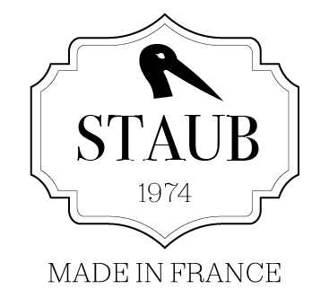
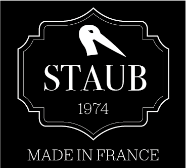
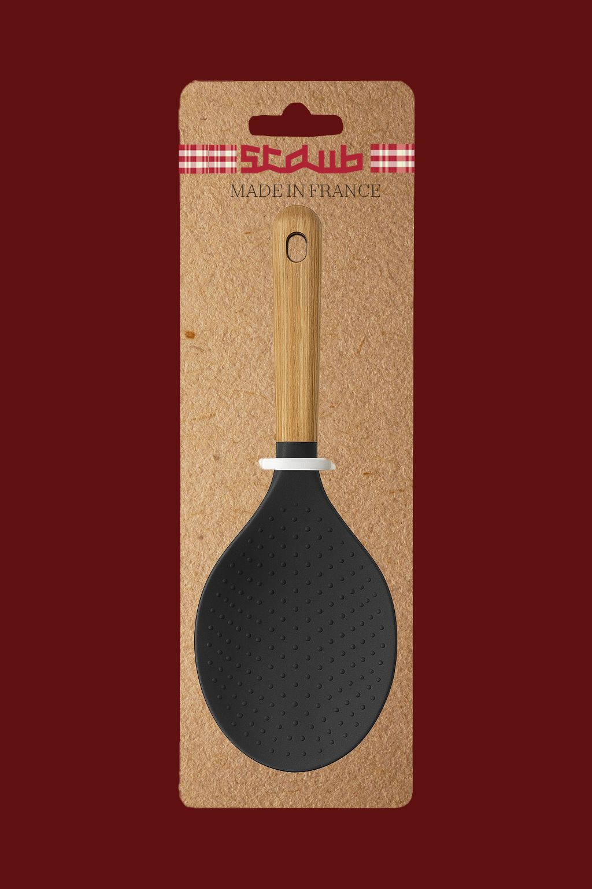

Instagram
À propos
Staub
Identité
2025
⏳⏳⏳ projet en cours...
Refonte de l'identité de la marque de cuisine Staub, en respectant les valeurs de qualité et de solidité et mettant en avant le patrimoine et le coté haut de gamme de la marque.
 
